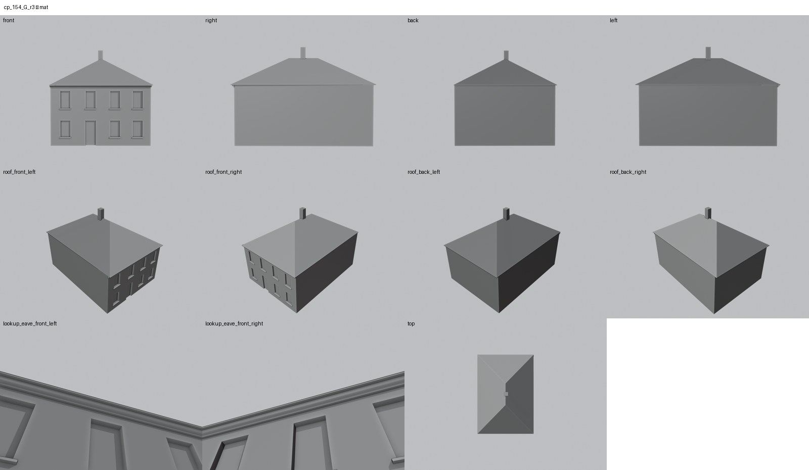

Identita domu
Dům s průčelím do Školní ulice. V databázi k němu není fotografie ani plán, model je celý hypotéza podle GIS půdorysu. Podle karty ze schodů patřil k domkům pod hradbami zbořeným okolo roku 1954.
Použité prameny: jen GIS půdorys a seznam domů u fotografie cp_111,154,265,266,267_001, kde ho nelze rozlišit.
Přílohy v databázi (2)
Všechny přílohy struktury 154 v databázi Libuše, načtené 18. 10. 2026 a otevřené. Kliknutím otevřete větší náhled.

fotografie
SHA-256 0ebdc835a90e…

odvozenina (kolorovaná / FRONT)
SHA-256 050253bb34ef…
Geometrie
| Revize geometrie | r2 |
|---|---|
| Poloha | GIS půdorys id 302 (ulice Školní) |
| Šířka průčelí | 11,48 m |
| Výška okapu | 7,00 m (odhad) |
| Podlaží | 2 (hypotéza) |
| Střecha podle pramenů | valba (hypotéza) |
| Otvory / vikýře | 8 / 0 |
| Polygonů | 111 |
Kontrolní pohledy

Textury
zatím bez textur
Až Codex dodá texturovaný model, objeví se v prohlížeči nahoře volba Textury (Codex).
Hypotézy
Vše níže je model_hypothesis, provisional, locked: false.
- CELÝ DŮM JE HYPOTÉZA: žádný fotografický ani plánový pramen; jen GIS obrys a generické dvoupodlažní členění
Soubory
- Geometrie čp. 154, GLB
- Pracovní model: F:\MOST\output\kulova_5houses_claude_G_2026-10-16\houses\cp154\r2\cp_154_G_r2.blend
- Plán modelu: F:\MOST\output\kulova_5houses_claude_G_2026-10-16\houses\cp154\geometry_plan.json